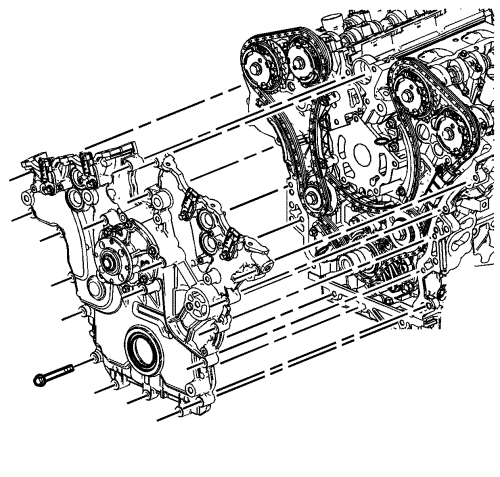
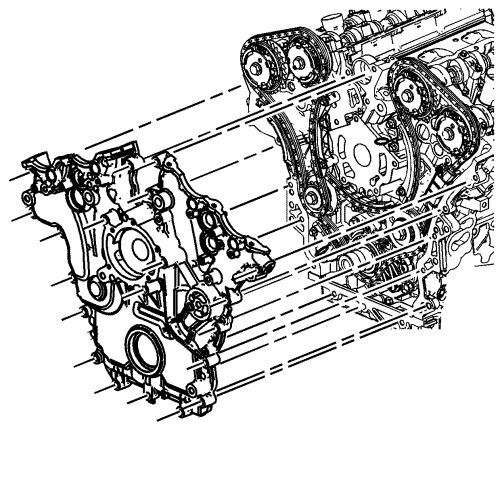

Sustitución de la cubierta delantera del motor
Herramientas especiales
EN-46109 Pasadores guía para montaje de la tapa delantera del motor
Si desea informarse sobre herramientas regionales equivalentes, consultar Herramientas especiales .
Procedimiento de desmontaje
- Desmonte el colector de admisión. Consultar Sustitución del colector de admisión .
- Retire las tapas del árbol de levas. Consultar Sustitución de la tapa de los árboles de levas - lado izquierdo y Sustitución de la tapa de los árboles de levas - lado derecho .
- Vacíe el refrigerante del motor. Consultar Drenaje y llenado del sistema de refrigeración .
- Desconecte de la salida de agua, el tubo flexible del respiradero de purga.
- Extraiga la salida de agua con el tubo flexible del radiador y colóquelos aparte. Consultar Sustitución de la salida de agua : LF1 .
- Desmonte el equilibrador del cigüeñal. Consultar Sustitución del dámper del cigüeñal .
- Retire los sensores de posición del árbol de levas. Consulte Sustitución del sensor de posición del árbol de levas - Banco 2 (lado izquierdo) escape , Sustitución del sensor de posición del árbol de levas - Banco 2 (lado izquierdo) admisión , Sustitución del sensor de posición del árbol de levas - Banco 1 (lado derecho) escape y Sustitución del sensor de posición del árbol de levas - Banco 1 (lado derecho) admisión .
- Extraiga el alternador. Consultar Sustitución del generador : LNQ → LF1 → LE5 .
- Retire sólo la polea de la bomba de agua.
- Retire el dispositivo tensor de la correa de accionamiento. Consultar Sustitución del tensor de la correa de accionamiento .
- Desmonte de la cubierta delantera las válvulas solenoides del actuador de posición del árbol de levas. Consulte Sustitución del solenoide de la válvula magnética del actuador de posición del árbol de levas - Banco1 (Lado derecho) Admisión , Sustitución del solenoide de la válvula magnética del actuador de posición del árbol de levas - Banco1 (Lado derecho) Escape , Sustitución del solenoide de la válvula magnética del actuador de posición del árbol de levas - Banco 2 (Lado izquierdo) Admisión y Sustitución del solenoide de la válvula magnética del actuador de posición del árbol de levas - Banco 2 (Lado izquierdo) Escape .

Nota: Hay un total de 22 tornillos M8 que deben retirarse y 3 tornillos M12 opcionales que es posible que tengan que retirarse antes de separar la cubierta delantera del bloque del motor.
- Retire la cubierta delantera del motor con la bomba de agua. Consultar Desmontaje de la cubierta delantera del motor .
- Desmonte la tapa delantera del motor. Consultar Desarmado de la cubierta delantera del motor .
Nota: NO utilice rasquetas para juntas afiladas o de metal para limpiar las superficies de sellado.
- Limpie con cuidado las superficies de sellado de la cubierta delantera del motor. Consultar Limpieza e inspección de la tapa delantera del motor .
Nota: Introduzca un pedazo de cartón entre el cárter de aceite y la bomba de aceite para evitar que caigan contaminantes en el cárter de aceite.
- Limpie con cuidado las superficies de sellado de la cubierta delantera del motor. Consultar Limpieza e inspección de la tapa delantera del motor .
- Utilice aire comprimido para eliminar el líquido refrigerante de los conductos de refrigeración del motor y de la parte superior de la rasqueta del cárter de aceite (bandeja de rozamiento).
Procedimiento de montaje
- Monte la tapa delantera del motor. Consultar Ensamblaje de la cubierta delantera del motor .

- Utilice pasadores EN-46109 para instalar la cubierta frontal de motor. Consultar Montaje de la cubierta delantera del motor .
- Monte las válvulas solenoides del actuador de posición del árbol de levas en la cubierta delantera. Consulte Sustitución del solenoide de la válvula magnética del actuador de posición del árbol de levas - Banco1 (Lado derecho) Admisión , Sustitución del solenoide de la válvula magnética del actuador de posición del árbol de levas - Banco1 (Lado derecho) Escape , Sustitución del solenoide de la válvula magnética del actuador de posición del árbol de levas - Banco 2 (Lado izquierdo) Admisión y Sustitución del solenoide de la válvula magnética del actuador de posición del árbol de levas - Banco 2 (Lado izquierdo) Escape .
- Monte los sensores de posición del árbol de levas. Consulte Sustitución del sensor de posición del árbol de levas - Banco 2 (lado izquierdo) escape , Sustitución del sensor de posición del árbol de levas - Banco 2 (lado izquierdo) admisión , Sustitución del sensor de posición del árbol de levas - Banco 1 (lado derecho) escape y Sustitución del sensor de posición del árbol de levas - Banco 1 (lado derecho) admisión .
- Montar el compensador del cigüeñal. Consultar Montaje del balancín del cigüeñal .
- Monte el soporte del generador con el generador y el tensor del cinturón. Consultar Sustitución del generador : LNQ → LF1 → LE5 .
- Coloque la salida de agua. Consultar Sustitución de la salida de agua : LF1 .
- Conecte el tubo flexible del respiradero de purga a la salida de agua.
- Llene el sistema de refrigeración. Consultar Drenaje y llenado del sistema de refrigeración .
- Coloque la polea de la bomba de agua.
- Monte el tensor de la correa de accionamiento. Consultar Sustitución del tensor de la correa de accionamiento .
- Monte las tapas del árbol de levas. Consultar Sustitución de la tapa de los árboles de levas - lado izquierdo y Sustitución de la tapa de los árboles de levas - lado derecho .
- Monte el colector de admisión. Consultar Sustitución del colector de admisión .
- Llene el sistema de refrigeración. Consultar Drenaje y llenado del sistema de refrigeración .
| © Copyright Chevrolet Europe. All rights reserved |